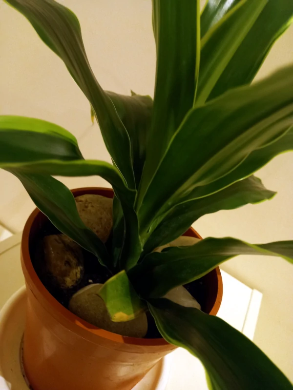

Turn Old drawer cabinet into a plant house

This is a project i was planing to do since last December. I finally started on Jan 5, 2021. What start this is that I have two identical drawerless cabinets that just sit in one room sucking space. i wanted to use them in a way that give them meaning in the apartment.
I decided to turn one into a plant house. First thing was to bring the cabinet out into the living room. Then i add a lovely Dracaena fragrans plant as a starter. 
These plants can live happly on low light and watering. making them a great choice for indoor plant!
The next step is to fill the rest with other plants. I estimate that i would need about 5-7 plants but i need to make sure they will get sufficent light. my plan is to:- Get mirrors for better light (maybe)
- Get art gallery or chrismas light bulbs (maybe)
- Get more plants
Finally and more importantly! I want to welcome Lilly, our new member
of the house.


Next will be a Dracaena trifasciata or Epipremnum aureum. Stay tuned!